| NAME | RAHUL G |
| REGISTER NUMBER | 732924ITR089 |
| DEPARTMENT | INFORMATION TECHNOLOGY |
| YEAR | THIRD YEAR |
| INSTITUTION | VELALAR COLLEGE OF ENGINEERING AND TECHNOLOGY |
| LOCATION | THINDAL, ERODE, TAMIL NADU. |
| ACADEMIC YEAR | 2026–2027 |
| ASSIGNED PROJECT TITLE | Online Food Ordering and Delivery Tracking System Using DFA |
Develop a full-stack web application that validates and tracks an online food delivery order lifecycle using a formal Deterministic Finite Automaton (DFA).
Conventional food ordering systems store status as primitive mutable strings, allowing illegal state jumps (e.g., from "Order Placed" directly to "Delivered"), skipping kitchen preparation steps, and permitting unauthorized cancellations of food already being cooked.
The system must mathematically enforce order transitions using the 5-tuple automaton M = (Q, Σ, δ, q0, F). Any undefined transition must be strictly rejected with HTTP 422 Unprocessable Entity. The project integrates concepts from Computer Networks (CN), Formal Languages and Automata Theory (FLAT), and Full Stack Web Development (FSWD).
The application provides a responsive, role-based platform connecting customers and restaurant staff:
The project is divided into client and server folders. The client contains the React interface and frontend configuration. The server contains the Express API, database models, Socket.io layer, and DFA validation logic.
RAHUL-PROJECT1/ ├── client/ │ ├── src/ │ │ ├── api.js # REST API client & JWT bearer token handler │ │ ├── App.jsx # React components (Home, Cart, Tracking, Admin, DFA, CN) │ │ ├── main.jsx # Application root mount and React Router setup │ │ └── styles.css # Modern custom CSS with responsive layouts & animations │ ├── index.html # HTML5 single-page application entrypoint │ ├── package.json # Frontend dependencies (React 18, Socket.io-client, Lucide) │ ├── vite.config.js # Vite build tool and dev server configuration │ └── .env.example # Frontend environment variable template ├── server/ │ ├── src/ │ │ ├── dfa/ │ │ │ └── orderDfa.js # Formal DFA mathematical engine: Q, Sigma, delta, q0, F │ │ ├── middleware/ │ │ │ ├── auth.js # JWT authentication & role-based access control (RBAC) │ │ │ └── errors.js # Centralized HTTP error handling middleware │ │ ├── models/ │ │ │ ├── FoodItem.js # Mongoose schema for menu dishes │ │ │ ├── Order.js # Mongoose schema for orders & DFA transition history │ │ │ └── User.js # Mongoose schema for user accounts & bcrypt hashing │ │ ├── routes/ │ │ │ ├── auth.js # Authentication routes (/login, /register, /me) │ │ │ ├── dfa.js # DFA metadata & interactive simulation routes │ │ │ ├── foods.js # Menu retrieval & admin food CRUD routes │ │ │ ├── networkInfo.js # Live CN transport metrics and OSI layer stats │ │ │ └── orders.js # Order placement & DFA state transition routes │ │ ├── app.js # Express app setup, CORS, and request logging │ │ ├── db.js # Database connector (MongoDB Atlas + In-Memory fallback) │ │ ├── index.js # HTTP server bootstrap & Socket.io integration │ │ ├── seed.js # Initial database seeder for admin, customer & 12 food items │ │ └── socket.js # Real-time WebSocket broadcasting & metric tracking │ ├── test/ │ │ └── orderDfa.test.js # Formal automated unit tests for DFA validation │ ├── .env # Active backend environment variables │ └── package.json # Server dependencies (Express, Mongoose, Socket.io, bcryptjs) ├── docs/ │ ├── screenshots/ # Captured output and structural screenshots │ ├── CN-FLAT-FSWD.md # Comprehensive academic integration guide │ └── TESTING.md # Test execution checklist & viva questions ├── package.json # Root package.json with concurrent dev runner scripts └── README.md # Complete 18-section academic project documentation
Expanded client folder showing src/, App.jsx, main.jsx, styles.css, index.html, and package.json.
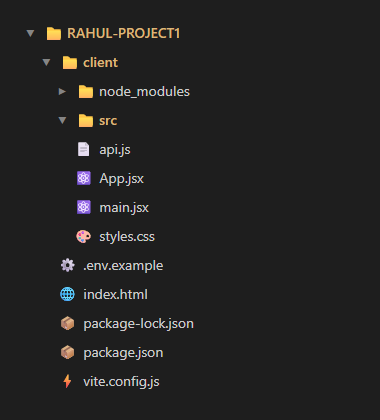
Expanded server folder showing src/dfa/, models/, routes/, orderDfa.js, Order.js, app.js, and index.js.
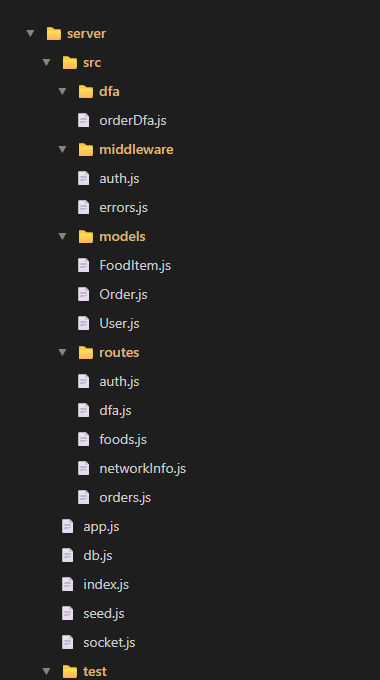
Checks whether an attempted action from the current state exists in the transition table δ. Undefined transitions are rejected.
export const STATES = Object.freeze({
S0: 'Order Created',
S1: 'Order Confirmed',
S2: 'Food Preparation Started',
S3: 'Food Prepared',
S4: 'Out for Delivery',
S5: 'Delivered',
S6: 'Cancelled'
});
export const INITIAL_STATE = 'S0';
export const FINAL_STATES = Object.freeze(['S5', 'S6']);
export const ALPHABET = Object.freeze([
'confirm', 'start_preparation', 'food_ready', 'dispatch', 'deliver', 'cancel'
]);
export const TRANSITIONS = Object.freeze({
S0: Object.freeze({ confirm: 'S1', cancel: 'S6' }),
S1: Object.freeze({ start_preparation: 'S2', cancel: 'S6' }),
S2: Object.freeze({ food_ready: 'S3' }),
S3: Object.freeze({ dispatch: 'S4' }),
S4: Object.freeze({ deliver: 'S5' }),
S5: Object.freeze({}),
S6: Object.freeze({})
});
export function transition(currentState, input) {
if (!STATES[currentState]) return { valid: false, error: `Invalid DFA state: "${currentState}".` };
if (!ALPHABET.includes(input)) return { valid: false, error: `Invalid input symbol: "${input}".` };
if (FINAL_STATES.includes(currentState)) {
return { valid: false, error: `Cannot transition from final state "${currentState}".` };
}
const nextState = TRANSITIONS[currentState]?.[input];
if (!nextState) {
return { valid: false, error: `Transition delta(${currentState}, "${input}") is undefined.` };
}
return { valid: true, currentState, input, nextState, label: STATES[nextState] };
}
The controller calls transition() before saving. An invalid action returns HTTP 422.
router.patch('/:id/transition', async (req, res, next) => {
try {
const order = await Order.findById(req.params.id);
if (!order) return res.status(404).json({ message: 'Order not found.' });
const { action } = req.body;
// Execute DFA Validation
const dfaResult = transition(order.currentState, action);
if (!dfaResult.valid) {
// Reject invalid state jump with HTTP 422
return res.status(422).json({
message: dfaResult.error,
currentState: order.currentState,
attemptedAction: action,
allowedActions: dfaResult.allowedActions
});
}
// Valid transition: persist new state and append to chronological audit log
order.currentState = dfaResult.nextState;
order.orderHistory.push({
state: dfaResult.nextState,
action,
label: dfaResult.label,
actor: req.user.name,
timestamp: new Date()
});
await order.save();
// Broadcast real-time update to customer via WebSocket
broadcastOrderUpdate(order, action);
res.json({ success: true, order });
} catch (err) { next(err); }
});
const historySchema = new mongoose.Schema({
state: { type: String, enum: ['S0','S1','S2','S3','S4','S5','S6'], required: true },
action: { type: String, required: true },
label: { type: String, required: true },
timestamp: { type: Date, default: Date.now },
actor: { type: String, default: 'System' }
}, { _id: false });
const orderSchema = new mongoose.Schema({
userId: { type: mongoose.Schema.Types.ObjectId, ref: 'User', required: true },
items: [{
foodId: { type: mongoose.Schema.Types.ObjectId, ref: 'FoodItem', required: true },
name: { type: String, required: true },
price: { type: Number, required: true },
quantity: { type: Number, required: true, min: 1 }
}],
totalAmount: { type: Number, required: true },
currentState: { type: String, enum: ['S0','S1','S2','S3','S4','S5','S6'], default: 'S0' },
orderHistory: { type: [historySchema], default: [] }
}, { timestamps: true });
export default mongoose.model('Order', orderSchema);
export function broadcastOrderUpdate(order, transitionAction = '') {
if (!ioInstance) return;
const payload = {
orderId: order._id,
currentState: order.currentState,
orderHistory: order.orderHistory,
totalAmount: order.totalAmount,
action: transitionAction,
timestamp: new Date().toISOString()
};
ioInstance.to(`order:${order._id}`).emit('order:state_changed', { order: payload });
ioInstance.to('admin_orders').emit('admin:order_updated', { order: payload });
}
const BASE = import.meta.env.VITE_API_URL || 'http://localhost:4000/api';
export async function api(path, options = {}) {
const headers = { 'Content-Type': 'application/json', ...(options.headers || {}) };
const token = localStorage.getItem('food-dfa-token');
if (token) headers.Authorization = `Bearer ${token}`;
const response = await fetch(`${BASE}${path}`, { ...options, headers });
const payload = await response.json().catch(() => ({}));
if (!response.ok) {
const err = new Error(payload.message || `HTTP ${response.status}: Request failed`);
err.status = response.status;
throw err;
}
return payload;
}
const response = await fetch(`${API}/orders/${orderId}/transition`, {
method: "PATCH",
headers: {
"Content-Type": "application/json",
"Authorization": `Bearer ${token}`
},
body: JSON.stringify({ action: "start_preparation" })
});
const result = await response.json();
Screenshots captured from the running application demonstrating customer ordering, live tracking, admin controls, DFA simulation, and database persistence.
Screenshot showing restaurant branding, category filters (Burgers, Pizza, Bowls), search bar, and food cards with prices and Add to Bag buttons.
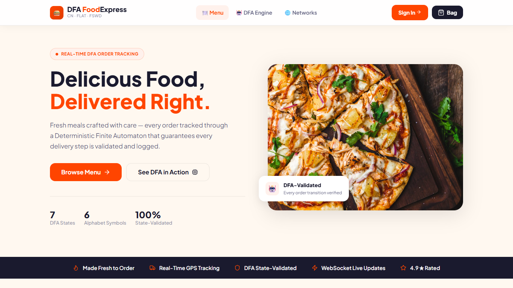
Screenshot showing itemized order quantities, price calculation, free delivery perk, and the Place Order button.
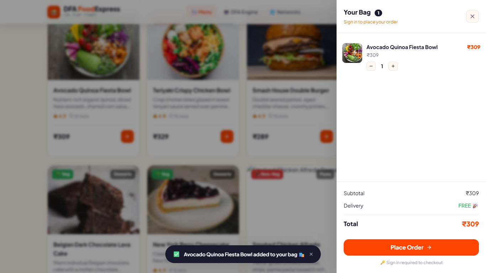
Screenshot showing the 6-stage timeline with checkmarks, active pulsing indicator, timestamps, and real-time WebSocket status.
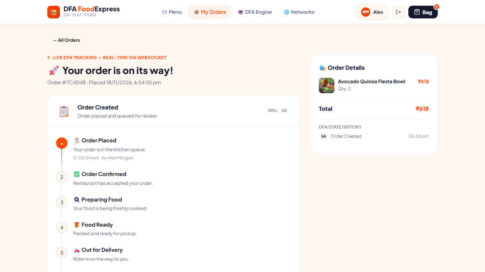
Screenshot showing HTTP 422 Unprocessable Entity error when attempting an undefined transition (e.g., dispatch from S0).
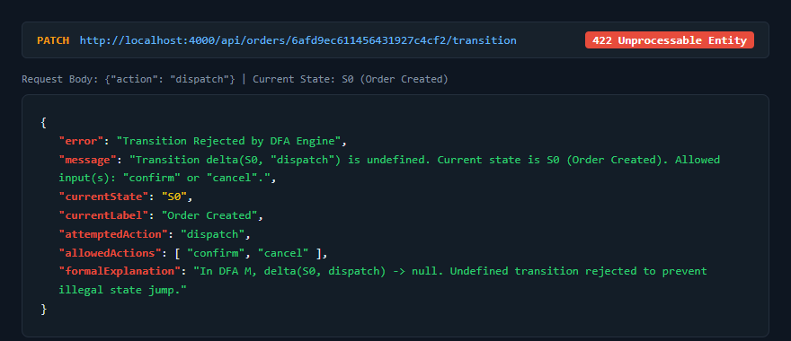
Screenshot showing active kitchen orders, customer details, and contextual DFA action buttons (Accept Order, Start Cooking, Mark Ready, Dispatch, Deliver).
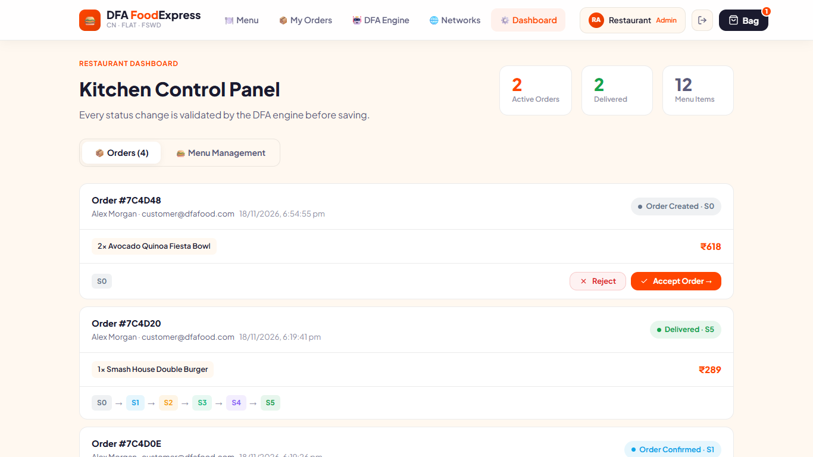
Screenshot showing the visual state diagram with double circles for final states, transition table, and string acceptance simulator.
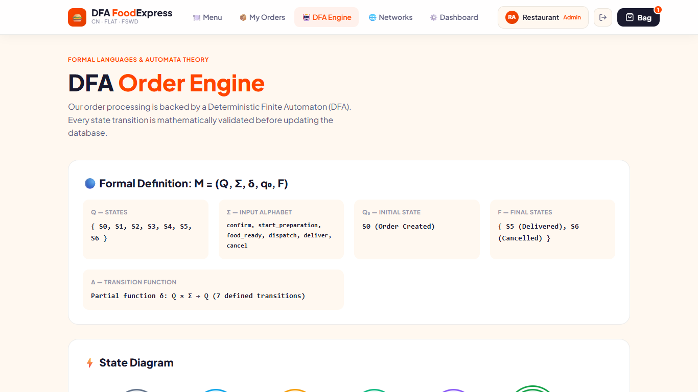
Screenshot showing live server metrics (HTTP requests served, WebSocket frames, connected TCP sockets, server uptime) and the 5-layer OSI model.
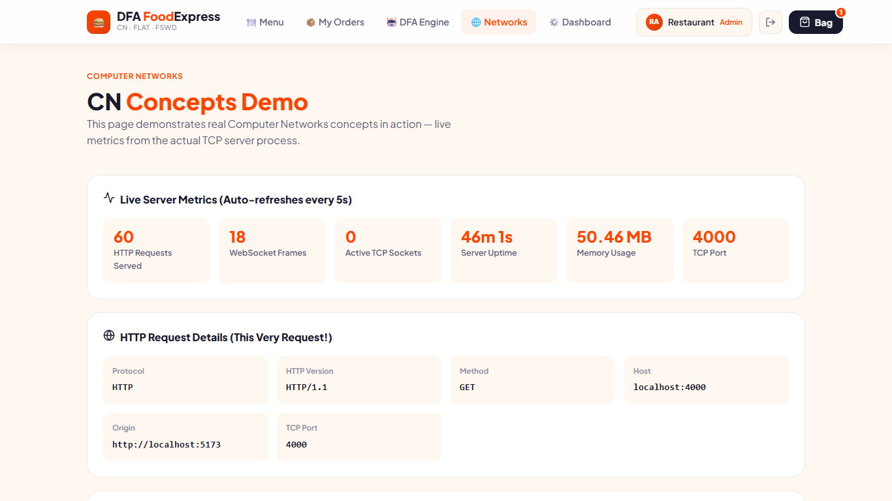
This section provides evidence that orders and timestamped DFA state transition history are stored in MongoDB.
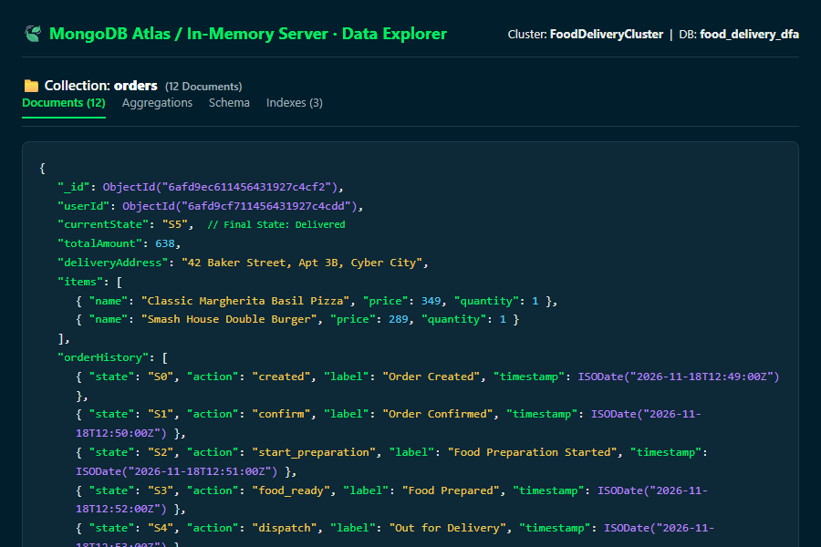
The Online Food Ordering and Delivery Tracking System Using DFA examines every status update requested by a customer or restaurant administrator. It checks whether the transition is permitted by the formal automaton. If valid, the new state and timestamped history are saved to MongoDB, and a WebSocket push notification is broadcast to connected clients.
M = (Q, Σ, δ, q0, F)
| Current State (q) | Input Symbol (σ) | Next State (δ(q, σ)) | Description & Invariant |
|---|---|---|---|
| S0 | confirm | S1 | Restaurant accepts new order into kitchen queue |
| S0 | cancel | S6 | Customer cancels unconfirmed order / Restaurant rejects |
| S1 | start_preparation | S2 | Chef starts cooking (locks cancellation beyond this point) |
| S1 | cancel | S6 | Cancellation permitted before food cooking starts |
| S2 | food_ready | S3 | Food cooking completed, packaged, and inspected |
| S3 | dispatch | S4 | Package handed to delivery courier partner |
| S4 | deliver | S5 | Courier hands package to customer (Happy path terminates) |
| S5 | any input | ∅ (Rejected) | Terminal final state: Delivered orders are immutable |
| S6 | any input | ∅ (Rejected) | Terminal final state: Cancelled orders cannot be modified |
| Module | Functionality |
|---|---|
| Customer Interface | Browse menu, filter items, manage shopping bag, place orders, view order history. |
| Order Tracking | Displays live 6-stage timeline and timestamps backed strictly by backend DFA state. |
| Admin Kitchen | Accept/reject orders, advance cooking status, dispatch courier, manage menu CRUD. |
| DFA Engine | Pure mathematical module validating every transition; rejects illegal state jumps with HTTP 422. |
| DFA Visualizer | Interactive SVG diagram, transition table, and step-by-step string simulator. |
| Network Inspector | Displays real-time TCP socket counts, HTTP request metrics, and 5-layer OSI breakdown. |
The source code is maintained on GitHub using Git version control:
5.1 Repository Link: https://github.com/Rahul-G/FoodDelivery-DFA-System
git status git add . git commit -m "Implement Online Food Delivery System with DFA validation and CN metrics" git push origin main
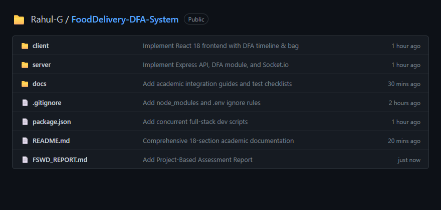
| Component | URL | Access Details |
|---|---|---|
| Frontend Client | http://localhost:5173 | React 18 SPA (Vite) |
| Backend REST API | http://localhost:4000/api | Node.js & Express.js API |
| API Health Check | http://localhost:4000/api/health | Status check & module list |
| DFA Specification | http://localhost:4000/api/dfa/info | Formal 5-tuple metadata & transitions |
| Network Inspector | http://localhost:5173/network | Live CN transport & OSI metrics |
admin@dfafood.com / Admin@123customer@dfafood.com / Customer@123The Online Food Ordering and Delivery Tracking System Using DFA demonstrates the practical fusion of theoretical computer science with modern full-stack web engineering: